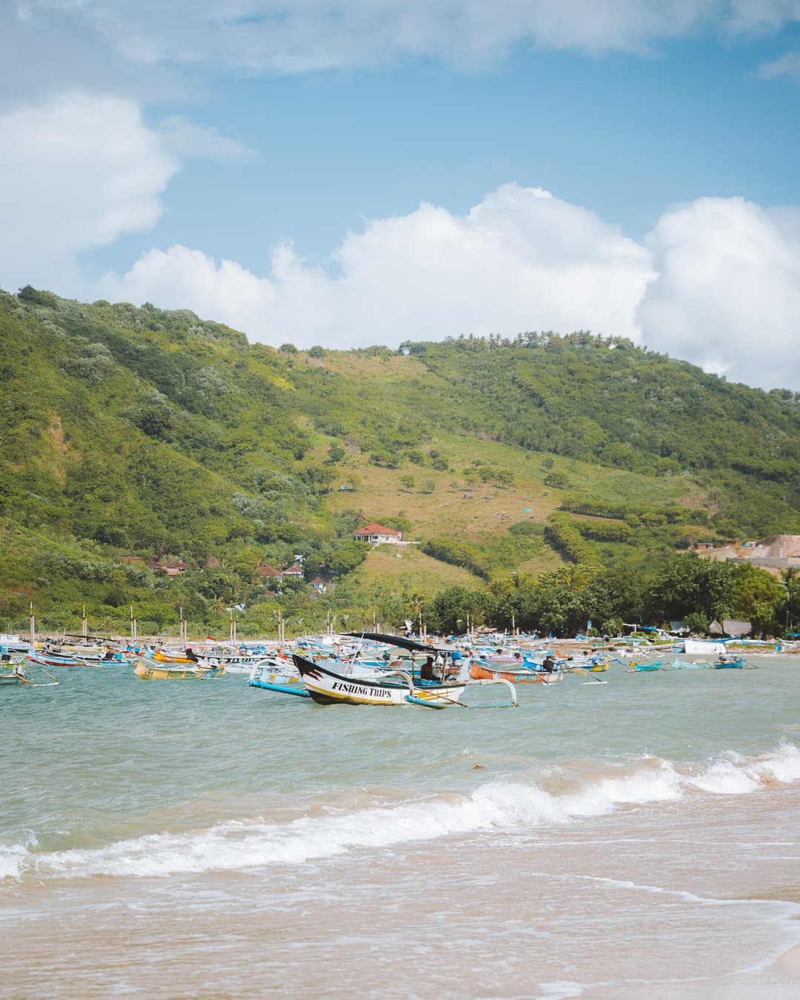
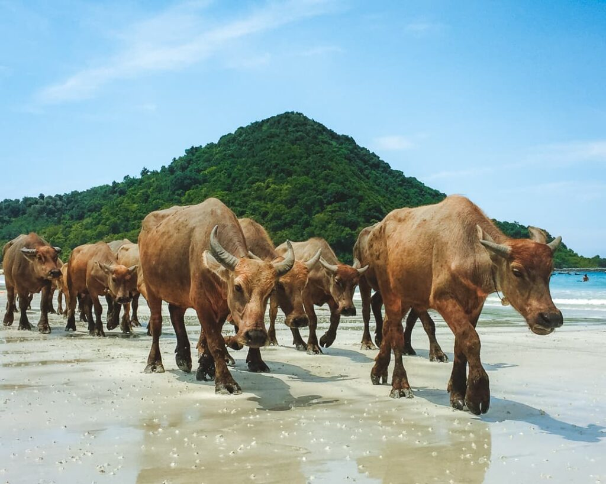
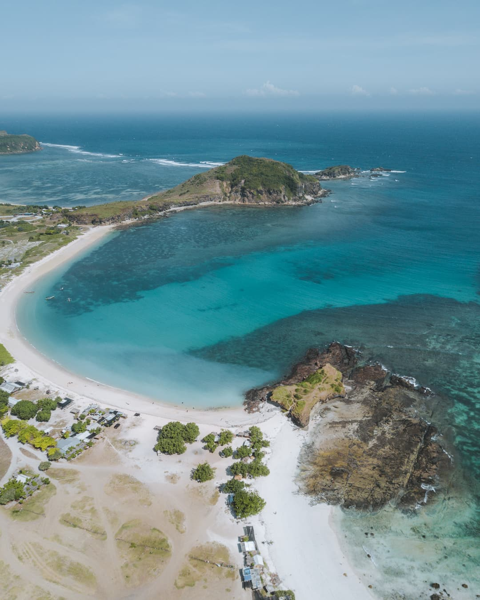
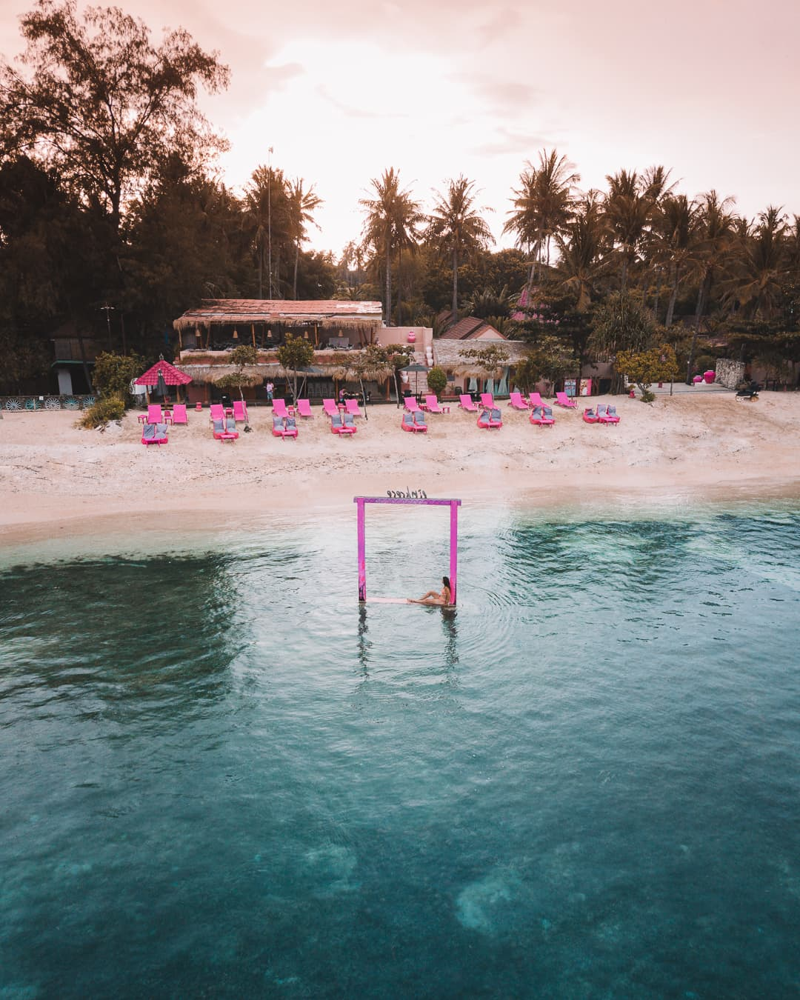
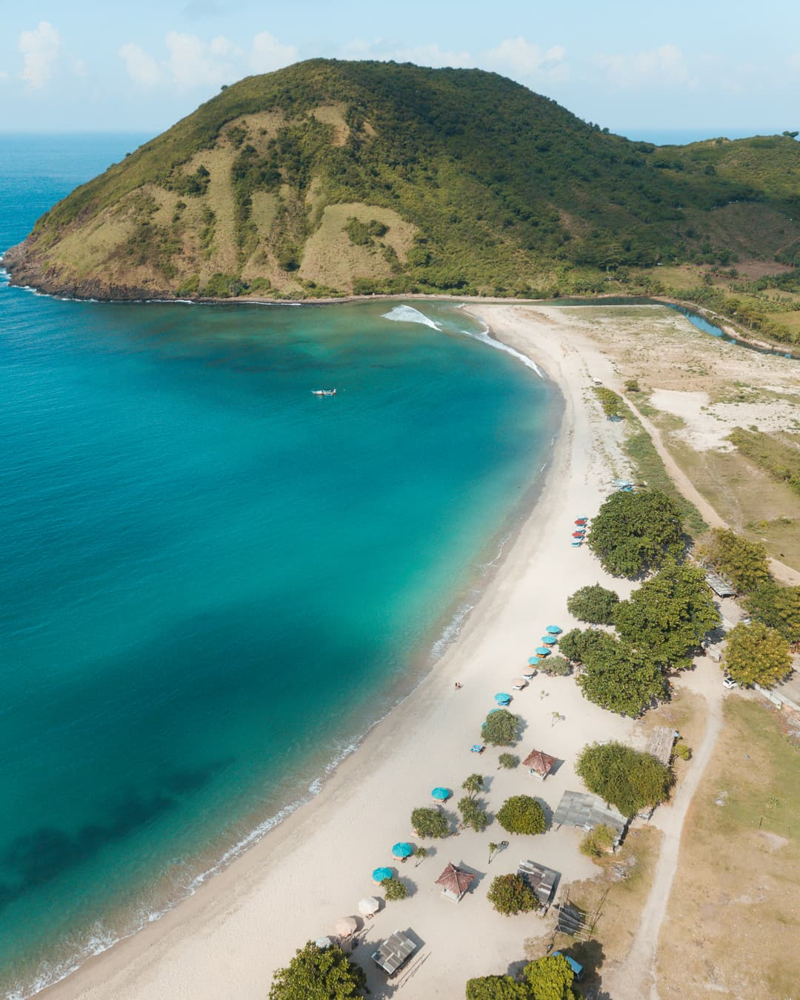

Why Lombok?
Lombok memiliki garis pantai yang menakjubkan dengan hamparan pantai yang panjang dan teluk-teluk kecil yang menawan untuk dijelajahi. Apakah Anda sedang mencari pantai terbaik di Lombok? Sebagian besar pantai di Pulau Lombok dapat dikunjungi secara gratis, menjadikannya alasan tambahan untuk memasukkan Lombok ke dalam daftar perjalanan Anda. Kuta, Senggigi, dan Kepulauan Gili adalah tujuan pantai populer di Lombok, yang menawarkan pasir putih yang indah, pohon kelapa, air biru jernih, serta banyak tempat untuk berselancar dan snorkeling. Berikut ini telah kami kumpulkan daftar pantai-pantai terindah di Lombok.
5 Fantastic Beaches in Lombok Island
Pantai Kuta

Pantai Kuta di Lombok, berbeda dari Pantai Kuta di Bali, dikenal dengan keindahan alami dan suasananya yang lebih tenang. Pantai ini menawarkan pasir putih halus seperti merica, air biru jernih, dan pemandangan bukit hijau di sekitarnya. Kuta Lombok juga menjadi favorit para peselancar, terutama pemula, karena ombaknya yang cocok untuk belajar berselancar. Selain itu, di sekitar pantai terdapat kafe-kafe kecil dan akomodasi ramah wisatawan.
Pantai Selong Belanak
Pantai Selong Belanak adalah salah satu pantai terindah di Lombok, dengan garis pantai melengkung sempurna seperti bulan sabit. Pasirnya yang putih lembut berpadu dengan air laut yang tenang, menjadikannya tempat yang ideal untuk berenang. Pantai ini juga populer di kalangan peselancar pemula, berkat ombaknya yang bersahabat. Penduduk lokal sering membawa ternak melintasi pantai, memberikan pemandangan unik bagi para wisatawan.
Pantai Tanjung Aan
Pantai Tanjung Aan terkenal dengan pasirnya yang unik, yang menyerupai butiran merica, serta keindahan alam yang memukau. Pantai ini menawarkan pemandangan laut biru yang luas dan bukit-bukit hijau yang mengelilinginya. Anda dapat mendaki Bukit Merese yang berada di dekatnya untuk menikmati pemandangan matahari terbenam yang spektakuler. Tanjung Aan juga cocok untuk berenang dan bersantai.
Kepulauan Gili
Kepulauan Gili terdiri dari tiga pulau utama: Gili Trawangan, Gili Meno, dan Gili Air. Ketiga pulau ini menawarkan pengalaman yang berbeda. Gili Trawangan terkenal dengan suasana pesta dan hiburannya, Gili Meno untuk pasangan yang mencari ketenangan, dan Gili Air menjadi pilihan keluarga. Kepulauan ini memiliki pantai-pantai pasir putih, air laut yang sangat jernih, dan terumbu karang yang sempurna untuk snorkeling atau diving.
Pantai Mawun
Pantai Mawun adalah teluk kecil yang dikelilingi oleh bukit-bukit hijau, menawarkan suasana yang tenang dan damai. Air laut di sini berwarna biru kehijauan, dengan pasir putih halus yang membentang di sepanjang garis pantai. Pantai ini kurang ramai dibandingkan pantai-pantai lainnya, menjadikannya tempat yang cocok untuk relaksasi atau piknik keluarga.